九秩墨香润杏坛, 群英慧语启新程
———《数学通报》创刊90周年高质量发展论坛在京举行
《数学通报》是我国数学教育领域历史最悠久的核心期刊，由中国数学会与北京师范大学联合主办。其前身为1936年中国数学会创办的《数学杂志》，刊名曾由毛泽东主席、郭沫若题写；复刊后，华罗庚、傅种孙作为总编辑为刊物发展奠定重要基础。该刊在中国数学会、北京师范大学的支持与关怀下，历经90载深耕，始终与我国数学普及事业、基础教育发展同频共振。2026年10月30日至11月1日，《数学通报》创刊90周年高质量发展论坛在北京师范大学举行。
一、发展论坛开幕式
发展论坛开幕式于10月31日上午在京师学堂京师厅举行。北京师范大学常务副校长王守军，中国数学会理事长、中国科学院院士席南华，北京大学教授、中国科学院院士张继平，华中师范大学校长彭双阶等领导和嘉宾现场出席；广州南方学院校长、中国科学院院士汤涛，北京师范大学数学科学学院教授、中国科学院院士陈木法通过线上方式出席；新老编委会成员及数学科学学院师生近200人齐聚一堂，庆祝刊物华诞，共商发展大计。开幕式由北京师范大学数学科学学院党委书记唐仲伟主持。
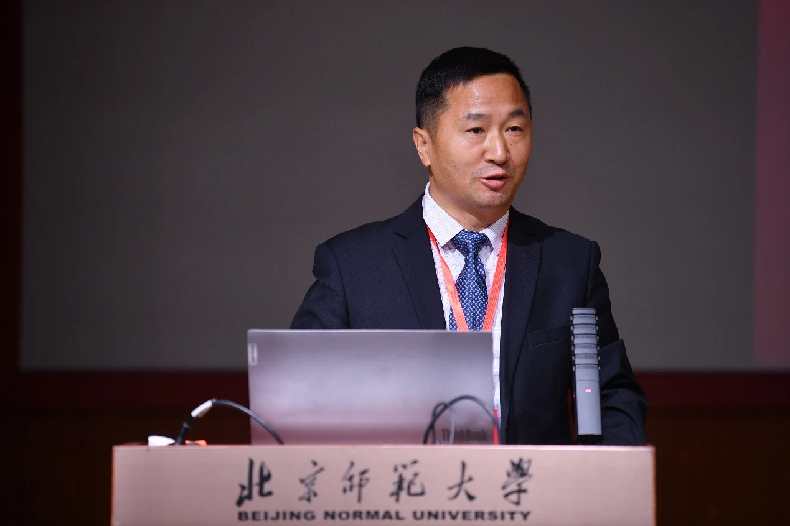
现场首先播放《数学通报》创刊90周年纪念短片，回顾刊物自1936年创刊以来，从战火中启程、在传承中发展的90载历程，以及刊物陪伴一代代数学人成长的育人故事。
北京师范大学常务副校长王守军老师代表学校致辞，回顾了北师大与《数学通报》的深厚渊源，肯定了刊物90年来搭建专业研究与基础教育桥梁的核心价值，并对新一届编委会提出四点期望：坚守中等数学教育定位，主动回应智能时代教育命题，构建融通开放办刊格局，探索数字出版与新媒体传播路径。
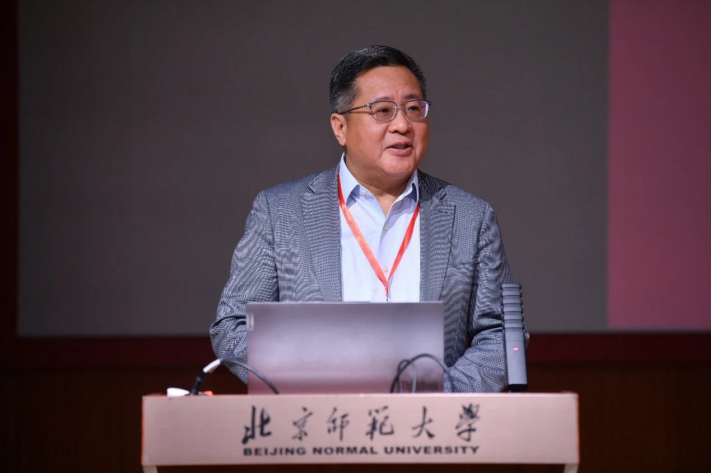
中国数学会理事长席南华院士致辞，高度评价《数学通报》厚重的历史积淀与鲜明的思想性特色，指出华罗庚、傅种孙等前辈数学家为刊物奠定了学术品位与精神底色，希望其持续发挥中学数学教育领域标志性期刊的示范引领作用。
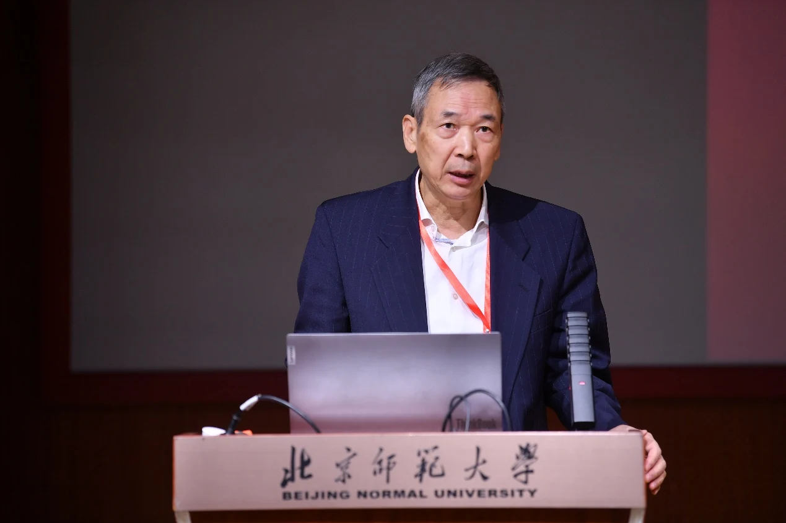
广州南方学院汤涛院士向《数学通报》创刊90周年致以祝贺，他结合自身办刊经验，肯定了《数学通报》坚守的办刊原则与历史贡献。他指出人工智能为数学教育带来新机遇，期待刊物扎根教学实践，在新时代续写新篇。
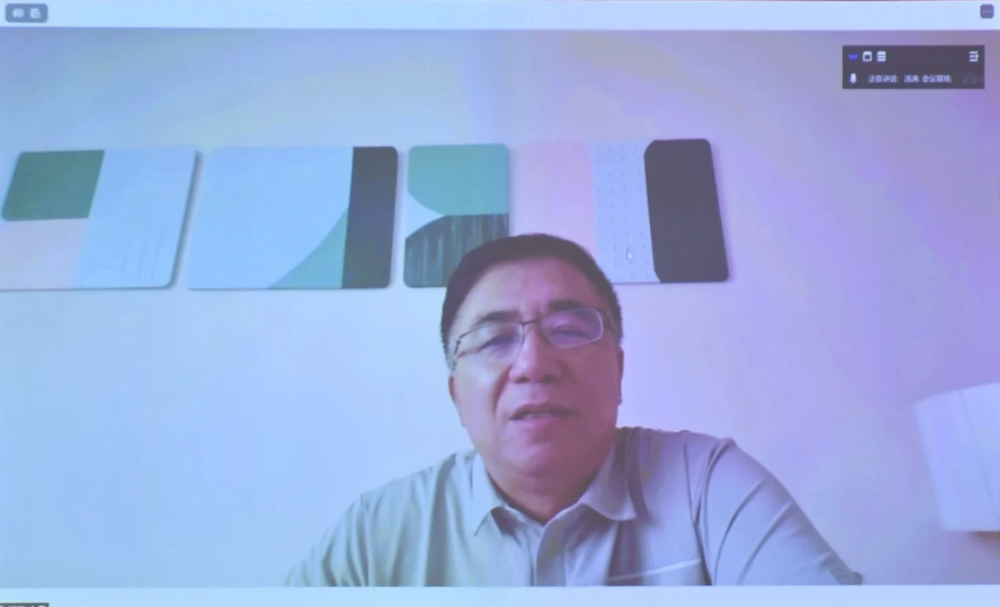
北京大学张继平院士向刊物90年华诞表示祝贺，高度评价其在人才培养与学科发展中的贡献，他提出当前人工智能为数学发展赋予全新命题，期待刊物继续传播新知、启迪思想，在新时代做出新的探索与贡献。
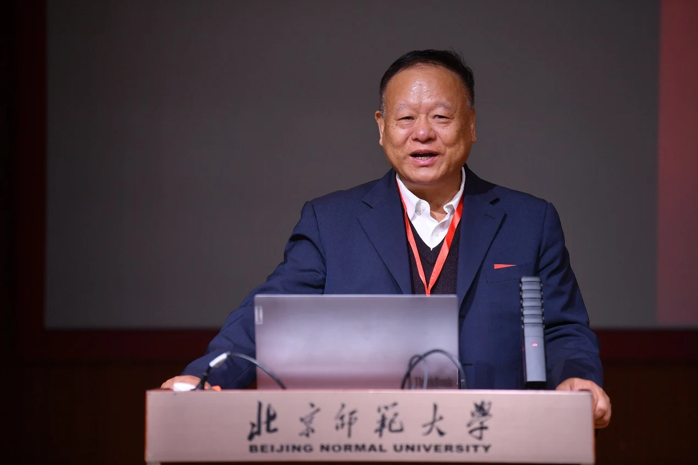
华中师范大学校长彭双阶教授回顾了学生时代订阅研读《数学通报》的成长经历，肯定刊物在普及数学知识、引领课程改革、衔接初高等数学等方面的标杆作用，结合自身投稿经历感谢刊物圆梦，祝愿刊物越办越好、再创辉煌。
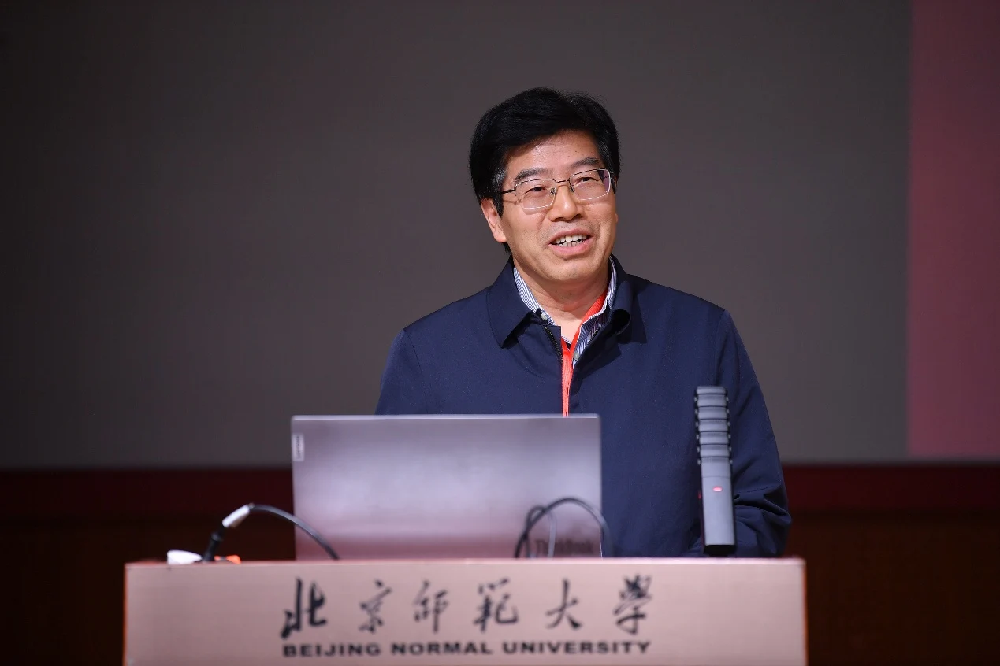
北京师范大学陈木法院士回顾了《数学通报》对自身学习的影响，同时期待刊物能发挥学科引领作用，在数学前沿趋势动向普及、人工智能时代数学教育变革专栏研讨等方面进一步加强。
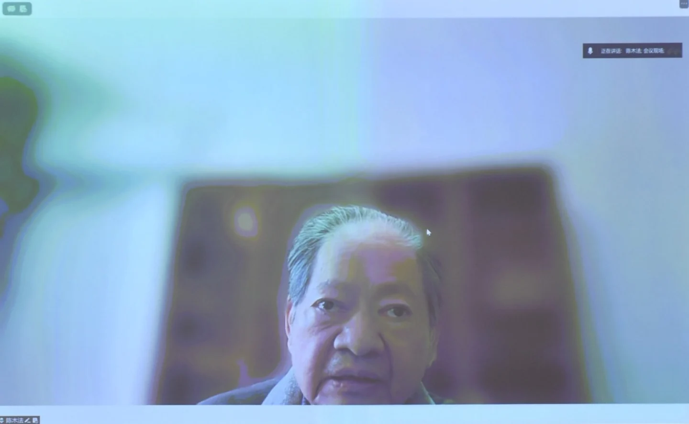
二、编委会换届仪式
论坛第二项议程是《数学通报》编委会换届仪式。席南华院士宣读《中国数学会关于同意〈数学通报〉编委会换届的批复》。
第七届主编保继光教授以视频讲话，回顾了全流程公益办刊、上线采编系统等扎实成果，对长期支持刊物发展的各方致以感谢，并对新一届编委会寄予厚望。
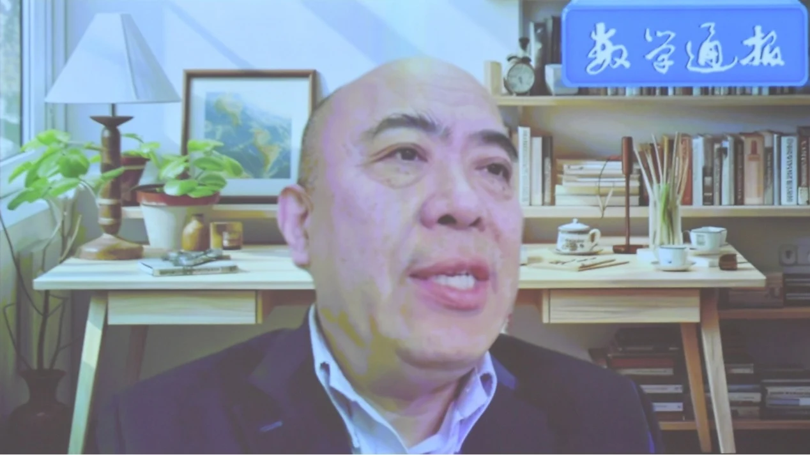
第八届主编李增沪教授发表履职讲话，他提出新一届编委会将在提升稿件质量、深化教研双向交流、探索人工智能时代数学教育新路径等方面持续发力。
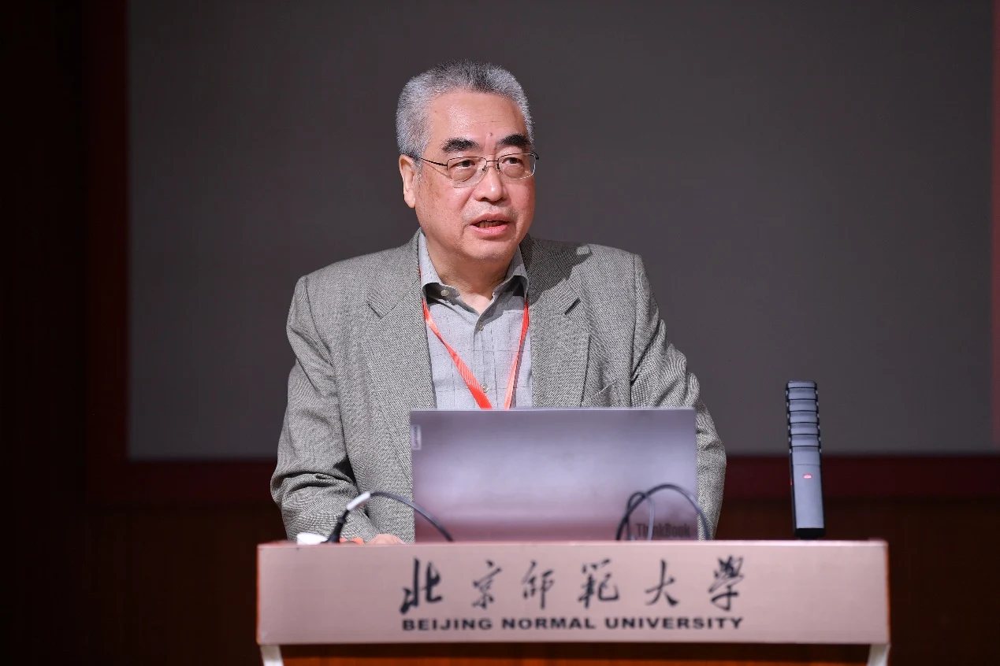
随后，席南华院士为第八届主编李增沪教授颁发聘书，李增沪教授与北京师范大学数学科学学院院长王恺顺教授共同为新一届编委颁发聘书。
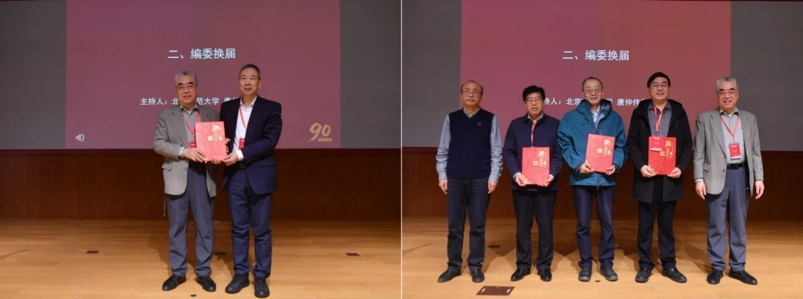
最后王恺顺院长发表讲话，他提出学院将从三方面支持刊物高质量发展：依托研究平台邀约高质量稿件，促进科研成果转化为教育教学资源；推动刊物与院士讲座联动，营造数学普及与教育的良好生态；做好编委会履职保障，提升编审质效，助力编审人员成长。
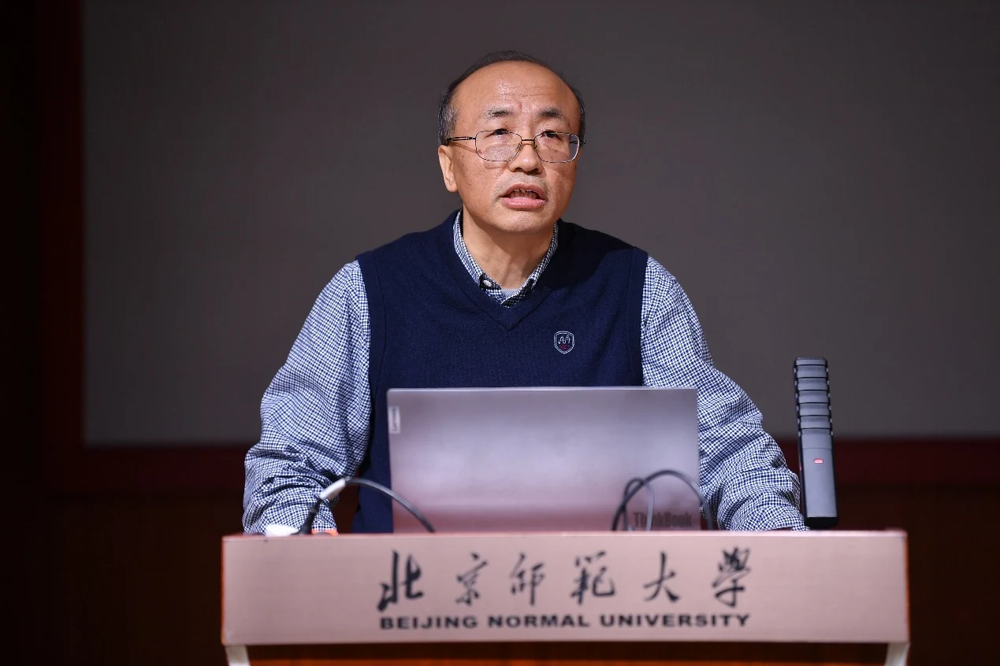
三、院士科普报告
换届仪式后，两场院士科普报告相继开讲。席南华院士作“京师数学教育论坛”第十八讲《数学概述》，系统梳理了代数、几何、分析三大数学核心分支的发展脉络，为听众展现了数学学科的主要发展脉络与整体面貌。汤涛院士作“京师数学大讲坛”第三十一讲《人工智能时代的数学学习》（线上），深刻解读了人工智能背景下数学教育的转型方向与原创思维的培养价值。
四、发展研讨会议
10月31日下午，《数学通报》发展研讨会议在北京师范大学后主楼1124会议室举行，会议由第八届主编李增沪教授主持，数学科学学院党委书记唐仲伟教授、新一届编委会成员及编辑部成员出席。
编辑部主任李亚玲简要介绍了刊物运营现状并提出工作建议。学术顾问陈木法院士线上参会，重点提出推动全刊采用LaTeX排版接轨国际规范，以及开设人工智能与数学教育专题两项建议。随后，与会编委围绕刊物定位、内容建设、青年作者培育等议题展开深入研讨，形成核心共识：坚守服务中学一线教师的核心定位，强化思想性与数学底色，主动回应人工智能挑战。
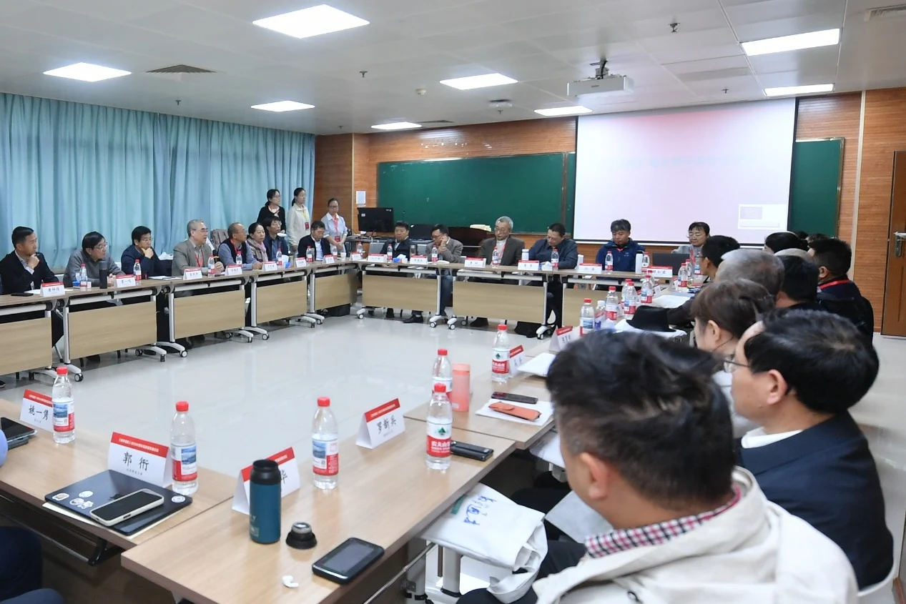
90载薪火相传，《数学通报》将以此次论坛与编委会换届为崭新起点，持续扎根中等数学教育沃土，坚守“在普及基础上提高，在提高指导下普及”的办刊传统，在人工智能时代的新命题下守正创新，续写数学普及与教育发展的新篇章。